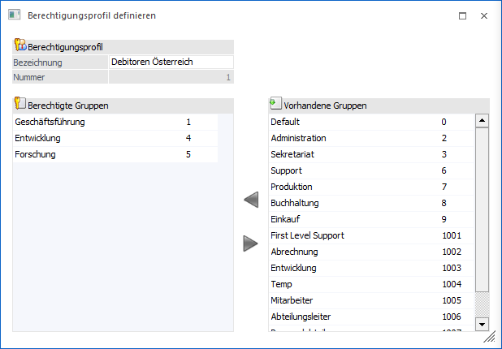
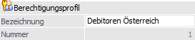
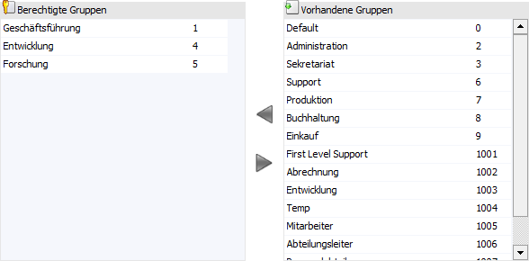
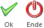

In WinLine kann an den unterschiedlichsten Stellen ein Berechtigungsprofil über das Feld "Berechtigung" hinterlegt werden. Wenn in diesem Feld der Eintrag
Ø >> Neues Profil
ausgewählt und bestätigt wird öffnet sich der Programmbereich "Berechtigungsprofil definieren". An dieser Stelle kann direkt ein neues Berechtigungsprofil erstellt werden ohne in den WinLine ADMIN zu wechseln.
Hinweis
Der Eintrag ">> Neues Profil" steht nur Benutzern mit dem Typ "Administrator" oder mit der Administratorenberechtigung "Benutzeradministration" zur Verfügung.
Achtung
Das nachträgliche Editieren von Berechtigungsprofilen findet im WinLine ADMIN über den Menüpunkt…
1 Benutzer
1 Berechtigungsprofile
… statt.

Berechtigungsprofil

Ø Bezeichnung
An dieser Stelle wird der Name für das neue Berechtigungsprofil hinterlegt. Dieser Name wird in weiterer Folge bei den jeweiligen Daten, wo das Berechtigungsprofil hinterlegt werden kann, angezeigt.
Ø Nummer
Die Nummer des Berechtigungsprofils wird automatisch vergeben und kann nicht manuell angepasst werden. Zur Ermittlung der Nummer sucht das Programm nach der ersten freien Profil Nummer beginnend ab 1.
Tabellen

In der Tabelle "Vorhandene Gruppen" werden alle vorhandenen System- und Berechtigungs-Benutzergruppen angezeigt, welche dem gerade zu definierenden Berechtigungsprofil noch nicht zugeordnet wurden.
Unter "Berechtigte Gruppen" sind die Benutzergruppen aufgeführt, welche diesem Berechtigungsprofil zugeordnet werden. Hierbei wird die System-Benutzergruppe des aktuellen Benutzers automatisch eingetragen.
Die Gruppen können über unterschiedliche Wege zwischen den Tabellen übergeben werden:
ü Benutzergruppe markieren und Button drücken (von "Vorhandene Gruppen" an "Berechtigte Gruppen")
Hinweis
Über die Kombination STRG-Taste + linke Maustaste oder SHIFT-Taste + linke Maustaste können in der Tabelle "Vorhandene Gruppen" mehrere Gruppen markiert und dann per Button übergeben werden.
ü Benutzergruppe markieren und Button drücken (von "Berechtigte Gruppen" an "Vorhandene Gruppen")
Hinweis
Über die Kombination STRG-Taste + linke Maustaste oder SHIFT-Taste + linke Maustaste können in der Tabelle "Berechtigte Gruppen" mehrere Gruppen markiert und dann per Button übergeben werden.
ü Per Doppelklick auf eine Benutzergruppe
Buttons

Ø Ok
Durch Anwahl des "Ok"-Buttons bzw. der Taste F5 wird das neu erstellte Berechtigungsprofil gespeichert und in das entsprechende "Berechtigungs"-Feld übernommen.
Ø Ende
Durch Drücken des Buttons "Ende" oder der ESC-Taste wird das Fenster geschlossen und die Neuanlage eines Berechtigungsprofils abgebrochen.